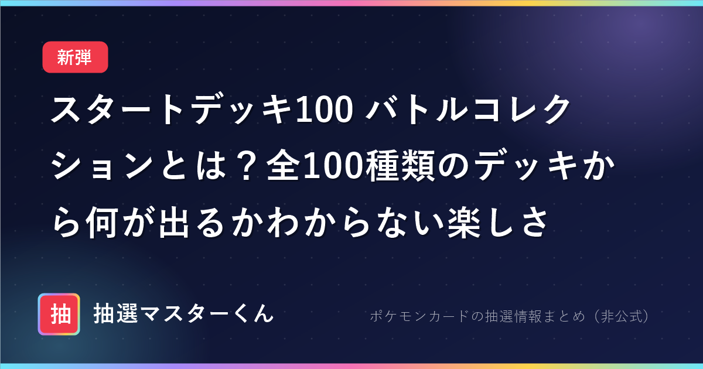

スタートデッキ100 バトルコレクションとは？全100種類のデッキから何が出るかわからない楽しさ

この商品の抽選・予約情報受付中 2件この記事の要点
- 2025年12月19日発売。全100種類の60枚デッキのうち、どれか1つがランダムで入っている
- デッキには001〜100の番号が付いていて、どれが届くかは開けるまでわからない
- メガリザードンY exが新たに収録されたことで話題に
- デッキによって中身の価値が大きく違うため、中古やフリマでは中身の確認が大切
どんな商品？
「スタートデッキ100」は、名前のとおり100種類の構築済みデッキから1つがランダムで届く商品です。2021年に最初の「スタートデッキ100」が発売され、今回の「バトルコレクション」はその新しいシリーズです。
どのデッキも60枚で、買ってすぐ対戦できる形になっています。ただし、どのデッキが当たるかは開けるまでわかりません。「好きなポケモンのデッキが欲しい」というより、何が出るかを楽しむ商品と考えるとよいでしょう。
公式動画で見る
動画は公式YouTubeチャンネルの埋め込み機能で表示しています。
注目はメガリザードンY ex
バトルコレクションでは、メガリザードンY exが新しく収録されたことが大きな話題になりました。リザードンは昔からポケカで最も人気のあるポケモンの1つで、このカードを狙って買う人も多くいます。
買うときの注意
- デッキの番号によって価値が違う：人気カードが入ったデッキとそうでないデッキで、中古の買取価格に大きな差が出ます
- 未開封品を買うなら正規の販売店で：中身だけ抜かれた商品が出回るトラブルを避けるためです。詳しくは転売品・トラブルを避ける記事で解説しています
- 中古の相場は時期で大きく動く：発売直後と数か月後で、買取価格が数倍違うこともあります。買う前に、複数の買取・販売サイトの最新価格を見比べましょう
抽選・再販情報
公式から追加生産・追加販売が案内されたこともあり、店舗によっては抽選販売が行われています。現在受付中の抽選は次のとおりです。
出典
当サイトは非公式のファンサイトです。価格・日程などは記事公開時点の情報なので、最新の情報は公式サイトや各販売店でご確認ください。